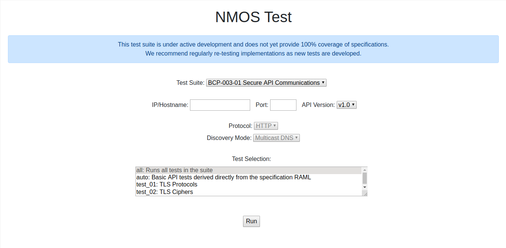
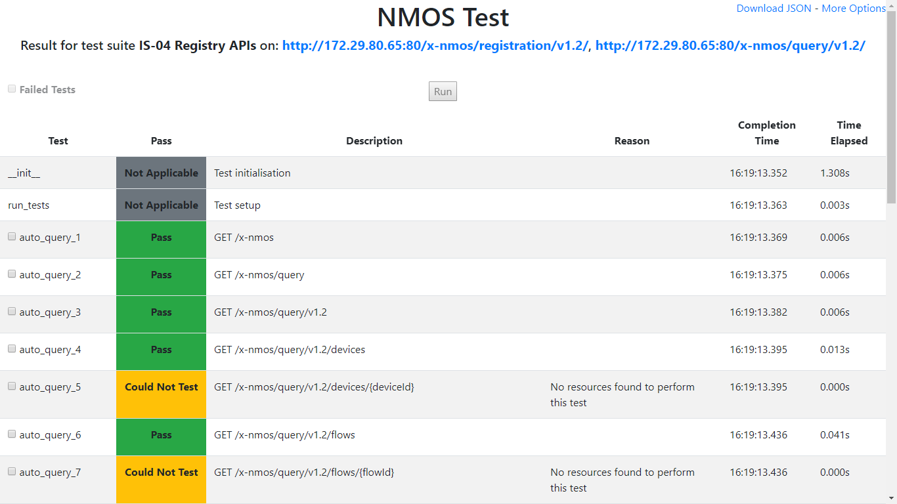

NMOS API Testing Tool


This tool creates a simple web service which tests implementations of the NMOS APIs.
| Selecting a test to run | Examining the results |
|---|---|
 |
 |
The following test suites are currently supported.
| Test Suite ID | Suite | Node | Registry | Controller | Other/Notes |
|---|---|---|---|---|---|
| IS-04-01 | IS-04 Node API | X | |||
| IS-04-02 | IS-04 Registry APIs | X | |||
| IS-04-03 | IS-04 Node API (Peer to Peer) | X | |||
| IS-04-04 | IS-04 Controller | X | See Testing Controllers | ||
| IS-05-01 | IS-05 Connection Management API | X | |||
| IS-05-02 | IS-05 Interaction with IS-04 | X | |||
| IS-05-03 | IS-05 Controller | X | See Testing Controllers | ||
| IS-06-01 | IS-06 Network Control API | Network Controller | |||
| IS-07-01 | IS-07 Event & Tally API | X | |||
| IS-07-02 | IS-07 Interaction with IS-04 and IS-05 | X | |||
| IS-08-01 | IS-08 Channel Mapping API | X | |||
| IS-08-02 | IS-08 Interaction with IS-04 | X | |||
| IS-09-01 | IS-09 System API | (X) | System Parameters Server | ||
| IS-09-02 | IS-09 System API Discovery | X | |||
| IS-10-01 | IS-10 Authorization API | Authorization Server | |||
| IS-11-01 | IS-11 Stream Compatibility Management API | X | |||
| IS-12-01 | IS-12 Control Protocol API | X | See Invasive Device Model Testing | ||
| IS-14-01 | IS-14 Device Configuration API | X | See Invasive Device Model Testing | ||
| - | BCP-002-01 Natural Grouping | X | Included in IS-04 Node API suite | ||
| - | BCP-002-02 Asset Distinguishing Information | X | Included in IS-04 Node API suite | ||
| BCP-003-01 | BCP-003-01 Secure Communication | X | X | See Testing TLS | |
| - | BCP-003-02 Authorization | X | X | See Testing Authorization | |
| - | BCP-004-01 Receiver Capabilities | X | Included in IS-04 Node API and IS-05 Interaction with IS-04 suites | ||
| BCP-006-01-01 | BCP-006-01 NMOS With JPEG XS | X | |||
| BCP-006-01-02 | BCP-006-01 Controller | X | See Testing Controllers | ||
| BCP-006-04 | BCP-006-04 NMOS With MPEG-TS | X | |||
| BCP-008-01-01 | BCP-008-01 Receiver Status Monitoring | X | |||
| BCP-008-02-01 | BCP-008-02 Sender Status Monitoring | X |
When testing any of the above APIs it is important that they contain representative data. The test results will generate 'Could Not Test' results if no testable entities can be located. In addition, if devices support many modes of operation (including multiple video/audio formats) it is strongly recommended to re-test them in multiple modes.
Installation & Usage
Detailed instructions can be found in the documentation.
Important Notes
- The IS-04 Node and IS-09 Discovery tests create mock mDNS announcements on the network unless the
nmostesting/UserConfig.pyENABLE_DNS_SDparameter is set toFalse, or theDNS_SD_MODEparameter is set to'unicast'. It is critical that these tests are only run in isolated network segments away from production Nodes and registries. Only one Node can be tested at a single time. IfENABLE_DNS_SDis set toFalse, make sure to update the Query API hostname/IP and port viaQUERY_API_HOSTandQUERY_API_PORTin thenmostesting/UserConfig.py. - For IS-04 Registry tests of Query API pagination, make sure the time of the test device and the time of the device hosting the tests is synchronized.
- For IS-05 tests #29 and #30, and IS-08 test #4 (absolute activation), make sure the time of the test device and the time of the device hosting the tests is synchronized.